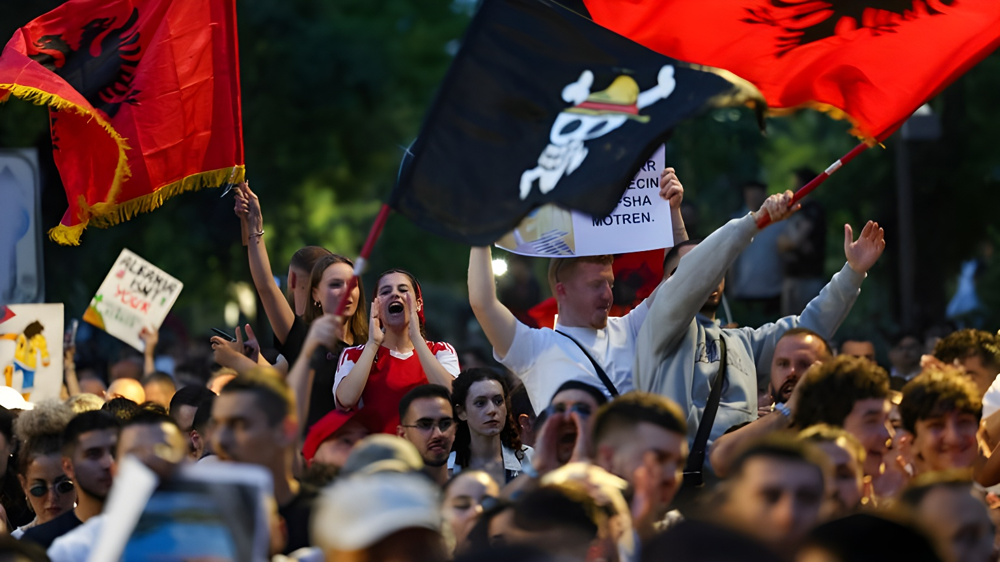

Depuis fin mai 2026, des milliers d'Albanais descendent dans les rues de Tirana et de Vlorë pour s'opposer à un vaste complexe touristique de luxe lié au fonds d'investissement Affinity Partners de Jared Kushner, gendre du président américain Donald Trump. Le projet, qui prévoit de transformer l'île de Sazan et le littoral protégé de Vjosa-Narta, cristallise trois crises simultanées : une crise environnementale, une crise de gouvernance et une question ouverte sur la souveraineté d'un pays candidat à l'UE.
Tout commence à Zvërnec, un village côtier du comté de Vlorë, dans le sud de l'Albanie. En mai 2026, des résidents découvrent que des barbelés ont été installés par des agents de sécurité privés pour interdire l'accès à une plage que des générations de familles albanaises avaient fréquentée librement. Les ouvriers, employés par la société Major Security, s'en prennent physiquement à des manifestants qui s'approchent. Plusieurs personnes sont blessées, les images circulent, et la réaction est immédiate : des milliers de personnes envahissent les rues de Tirana dès le 2 juin, arborant des drapeaux albanais et des pancartes portant l'inscription « L'Albanie n'est pas à vendre ».
Le SPAK (Parquet spécial contre la corruption et le crime organisé) ouvre une enquête sur l'origine des fonds utilisés pour acquérir les titres de propriété sur la zone, qui auraient ensuite été revendus aux investisseurs du projet. L'enquête porte également sur la manière dont certains responsables ont pu contourner le système habituel d'appels d'offres publics. Quinze manifestants font l'objet de poursuites pénales ; deux agents de sécurité privés sont mis sous enquête. Le directeur de la police de Vlorë est suspendu après avoir communiqué des informations inexactes sur les incidents.
Au printemps 2024, Jared Kushner avait annoncé, via son fonds Affinity Partners, son intention de développer plusieurs projets en Albanie et dans les Balkans. Le plus emblématique concerne l'île de Sazan, ancienne base militaire secrète de l'ère communiste, désormais inhabitée et sans infrastructure, qui serait transformée en complexe hôtelier de luxe. L'investissement sur cette île seule est estimé à 1,4 milliard d'euros. Un deuxième volet prévoit des hôtels, appartements, villas et une marina dans la zone de la lagune de Narta, réserve naturelle protégée jouxtant Zvërnec, à environ 150 kilomètres au sud-ouest de Tirana.
Peu après l'annonce, le parlement albanais avait modifié une loi pour permettre au gouvernement de délivrer des permis de construction dans des zones protégées pour les établissements classés cinq étoiles ou plus. La société Atlantic Incubation Partners, liée à Affinity Partners, a obtenu le statut d'« investisseur stratégique » auprès des autorités albanaises — un statut qui autorise la mise en œuvre d'un projet jugé stratégique dans des secteurs prioritaires, dont le tourisme. En janvier 2026, Ivanka Trump s'est rendue à Zvërnec avec un groupe d'architectes et d'investisseurs, et a dîné avec le Premier ministre Edi Rama.
« Je travaille sur un projet incroyable avec mon mari en Méditerranée. Nous avons découvert cette île en naviguant avec des amis. »
— Ivanka Trump, podcast Founders, mai 2026Cette déclaration d'Ivanka Trump a provoqué une onde de choc en Albanie. Qualifier Sazan de découverte personnelle, alors que l'île est un bien public albanais depuis des décennies et que sa base militaire fait partie de la mémoire collective nationale, est apparu à beaucoup comme une forme d'arrogance symbolique. Sur les réseaux sociaux et dans la rue, le slogan « Ivanka go home » s'est joint à celui de « L'Albanie n'est pas à vendre ». La délégation de l'UE en Albanie a demandé des informations aux autorités albanaises sur les développements dans la zone, soulignant l'importance des normes de protection environnementale dans le cadre du processus d'adhésion.
La zone de Vjosa-Narta est décrite par les associations de protection de l'environnement comme l'un des derniers écosystèmes côtiers semi-vierges de Méditerranée. Elle accueille des flamants roses, des pélicans, des phoques moines et des sites de nidification de tortues marines. L'organisation PPNEA, ONG albanaise spécialisée dans la faune, a documenté la destruction d'au moins un nid de tortue de mer lors des premières opérations de préparation du terrain. Dès janvier 2026, une quarantaine d'organisations environnementales avaient réclamé la suspension du projet, citant des risques sérieux pour la biodiversité.
Le projet, dont la superficie est estimée à 2,6 millions de mètres carrés dans la seule zone de Zvërnec, a été annoncé sans permis environnemental en bonne et due forme, selon le site d'enquête Faktoje. La société développeuse, Zvërnec South Adriatic Development, a affirmé agir en conformité avec le droit albanais et les procédures d'urbanisme. De son côté, le Premier ministre Edi Rama a déclaré que les terrains inclus dans le projet avaient été légalement acquis par des propriétaires privés et a rejeté toute accusation de transfert illégal de propriété publique.
La crise de Zvërnec survient dans un pays déjà fragilisé par une longue séquence de tensions politiques. Depuis novembre 2025, le SPAK poursuit l'ancienne vice-Première ministre Belinda Balluku pour avoir favorisé des entreprises proches du pouvoir lors d'appels d'offres portant sur des projets d'infrastructure — notamment un tunnel en Albanie du sud et une rocade à Tirana — représentant des centaines de millions d'euros. Edi Rama avait d'abord refusé de la révoquer, défiant ainsi une décision du SPAK, avant de la destituer lors d'un remaniement ministériel en février 2026. Dans l'indice de perception de la corruption de Transparency International 2025, l'Albanie a reculé de onze places en un an, se classant 91e sur 182 pays.
Ces scandales ont alimenté des manifestations de masse à Tirana depuis décembre 2025 — la plus violente, le 20 février 2026, a opposé des milliers de manifestants à la police devant le siège du gouvernement. Le Parti socialiste d'Edi Rama, réélu pour un quatrième mandat consécutif en mai 2025 avec 83 sièges, reste majoritaire mais a perdu six points dans les sondages. L'opposition, conduite par Sali Berisha (Parti démocrate), demeure fragmentée et n'a pas réussi à capitaliser durablement sur la contestation.
« L'Albanie n'est pas à vendre. »
— Slogan des manifestants à Tirana, juin 2026Jared Kushner (Affinity Partners) annonce des projets de développement touristique à Zvërnec et sur l'île de Sazan. Le parlement albanais amende la loi sur les zones protégées pour autoriser la construction hôtelière cinq étoiles.
Ivanka Trump se rend à Zvërnec avec des architectes et investisseurs. Une quarantaine d'associations environnementales demandent la suspension du projet, invoquant des menaces sur la biodiversité.
Premiers affrontements à Zvërnec entre manifestants locaux et agents de sécurité privés. Plusieurs blessés. Vidéos largement diffusées malgré le silence d'une partie de la télévision nationale.
Ivanka Trump déclare sur un podcast avoir « découvert » Sazan en naviguant. La déclaration provoque une vive réaction en Albanie. Le SPAK ouvre des enquêtes sur l'origine des fonds et les procédures d'acquisition foncière.
Plusieurs milliers de manifestants défilent trois jours consécutifs à Tirana, avec des pancartes « L'Albanie n'est pas à vendre » et « Ivanka go home ». La délégation de l'UE demande des explications aux autorités. Le directeur de la police de Vlorë est suspendu.
L'Albanie est candidate à l'Union européenne depuis 2014 et a ouvert les négociations d'adhésion en 2020. En 2025, le processus s'est accéléré à un rythme inhabituel — plusieurs clusters de négociation ouverts en succession rapide — mais les observateurs soulignent que cette vitesse n'a pas été accompagnée d'un approfondissement démocratique équivalent. La chute de onze places de l'Albanie dans l'indice de corruption de Transparency International, le recul de l'État de droit et la crise Zvërnec sont des signaux que Bruxelles ne peut ignorer. Pour l'Albanie, l'horizon européen reste la principale promesse de transformation. Pour ses citoyens qui descendent dans les rues, c'est précisément au nom de cet horizon — et des standards qu'il implique — qu'ils refusent que leur côte adriatique devienne un bien négociable entre États et investisseurs puissants.